Step 1 : Categories Module
Purpose: The Categories module helps you create and manage grouping structures such as Main Category, Raw Material Category, Packing Categories, and more. These categories are used throughout the system for RM Master, PMRM Master, Product Master, BOM, and Reporting.
The Categories Module allows users to define different types of categories required for Raw Materials, Packing Materials, and Size Categories. These master entries are required before creating PMRM Items or Cost Calculations.
1. Main Category
This section is used to define top-level material classifications such as Pesticides, Fertilizers, Packing, Technical, etc.
How to Add a Main Category
- Go to Categories ➜ Main Category.
- Enter a category name in the input field.
- Click the Add button to save.
- Category will appear in the list below.
📸 Screenshot – Main Categories
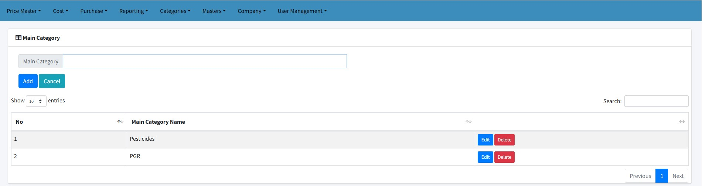
Actions Available
- Edit – Modify an existing category.
- Delete – Remove the category permanently.
- Search – Find category items quickly using the search box.
2. RM Category
Used to create categories specifically for Raw Materials (RM). These categories help classify RM materials under relevant groups.
How to Add an RM Category
- Go to Categories ➜ RM Category.
- Enter the RM Category name.
- Click Add to save.
📸 Screenshot – RM Categories
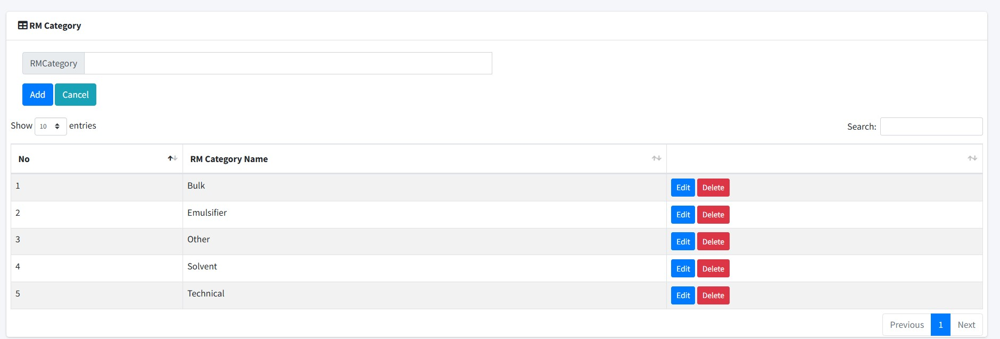
3. PM RM Category
The PM RM Category section defines packaging material categories such as Bottle, Bag, Drum, etc.
How to Add/Update PM RM Category
- Enter the name (Example: Bottle).
- Select the type:
- PM – Packing Material
- Shipper – Outer packaging
- Inner – Inner container
- Click Update to save.
📸 Screenshot – PM RM Categories
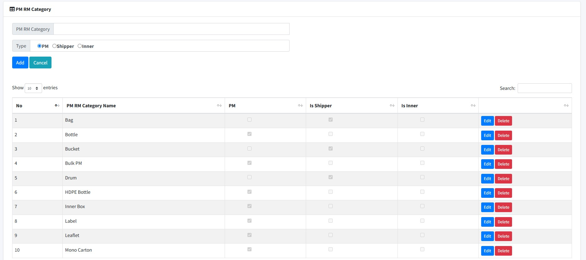
4. Packing Category
The Packing Category section is used to create units like ML, GM, LTR, KG, etc.
How to Add a Packing Category
- Navigate to Categories ➜ Packing Category.
- Enter the packing category (Example: ML).
- Click Add to save.
📸 Screenshot – Packing Categories
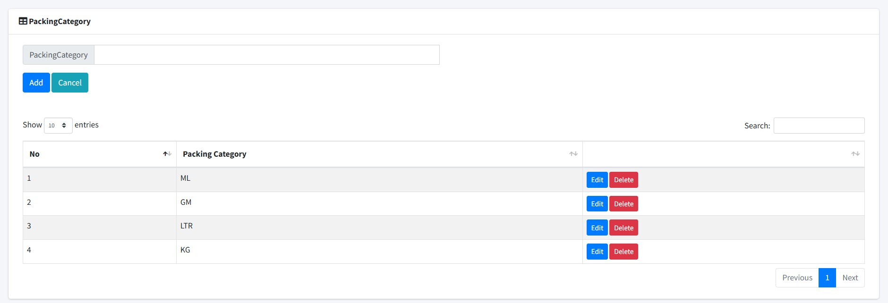
5. Packing Size Category
Packing sizes are linked to a packing category (e.g., GM, ML) with specific size values.
How to Add/Update Packing Size Category
- Select the Packing Category (Example: GM).
- Enter the Packing Size (Example: 250.00).
- Select the Measurement Unit.
- Click Update to save the changes.
📸 Screenshot – Packing Size Categories
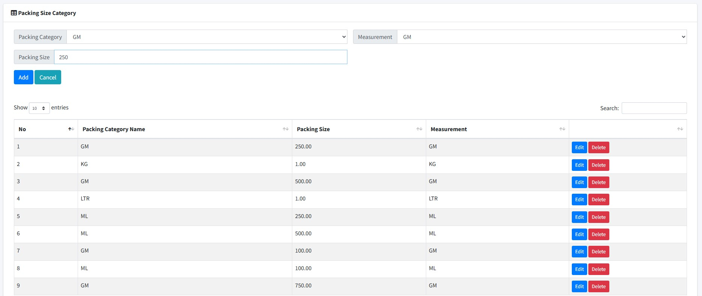
Step 2 : PM RM Master
The PMRM Master (Packing Material & Raw Material Master) module is used to store and manage all packing material and raw material items used in production. It acts as the central database for BOM creation, costing, and pricing modules.
1. Purpose of PMRM Master
The PMRM Master helps users:
- Create and maintain a standardized list of packing and raw materials.
- Organize materials under correct categories (PM Category / RM Category).
- Ensure consistent naming across the system.
- Enable material selection in the BOM (Bill of Material).
How to Add a PMRM Master
- Navigate to Master ➜ PM RM Master.
- PMRM Category – Select the category (Bottle, Shipper, Sleeve, etc.)
- PMRM Name – Enter the actual packing item name (e.g., 500 ML Bottle, Shipper Box)
- Total Weight of Unit – Enter the total weight of a single unit
- Per Unit/Kg – Auto-calculated value based on measurement
- Measurement – Choose ML, GM, KG, or Unit
- No of Unit – Quantity of packing material
- Unit/KG – Calculated value that converts the measurement to KG
📸 Screenshot – PM RM Master
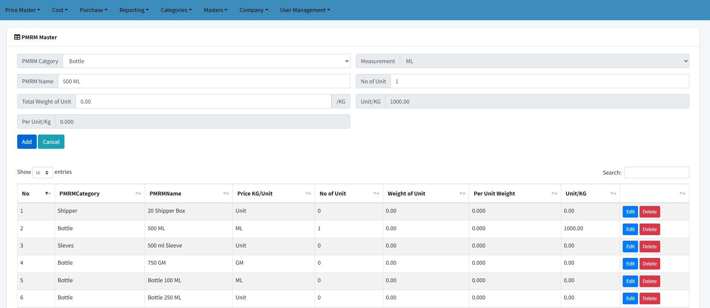
Where PMRM Master Is Used
This master is used in:
- BOM (Bulk Recipe) – Selecting packing/raw material for costing
- PMRM Price Master – Updating price per unit
- Finished Goods Pricing – Total product cost calculation
Step 3 : Packing Style Name
The Packing Style Name module is used to define various packing styles that combine different packing materials and methods for finished products. These styles are essential for accurate costing and production planning.
1. Purpose of Packing Style Name
The Packing Style Name module helps users:
- Create standardized packing style names (e.g., Bottle + Roll Label + Shrink).
- Facilitate selection of packing styles in costing modules.
- Ensure consistency in packing definitions across the system.
Adding a New Packing Style
- Navigate to Masters → Packing Style Name.
- Enter the Packing Style Name (e.g., “Bottle + Roll Label + Shrink”).
- Click the Add button to save the new packing style.
- The new record will appear in the list below.
📸 Screenshot – Packing Style Name
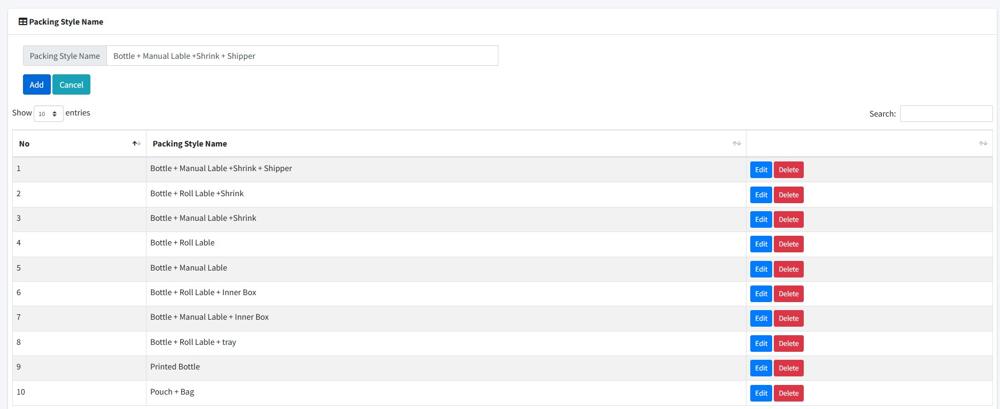
Step 4 : Cost Variable Master
The Cost Variable Master stores all the standard cost inputs used across costing and pricing calculations. Maintain these values centrally so costing reports and BOM calculations stay accurate and consistent.
Purpose
The Cost Variable Master is used to define and manage recurring cost parameters such as:
- Shift timings, break times and net shift hours
- Power unit price (per hour)
- Labour and supervisor charges (per day / per shift)
- Machine maintenance, loading/unloading, admin, and other overheads
- Default packing loss or extra expenses used by costing formulas
How to Update Cost Variables
- From the top menu choose Cost » Cost Variable Master.
- Change the numeric values in the appropriate fields (for example update Power Unit Price or Labour Charge).
- Check calculated fields like Net Shift Hours (they update automatically after edits).
- Click the green Update button to save changes.
- After update, new values are used in all costing calculations (BulkRecipe, BOM, Formulation, Finish Good Pricing reports).
📸 Screenshot – Cost Variable Master
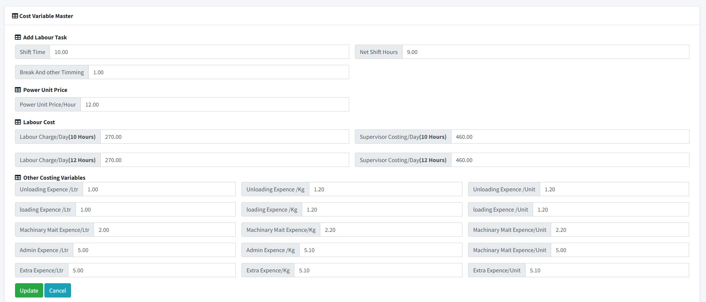
Step 5 : Bulk Formulation Category Master
The Bulk Formulation Category Master is used to manage all formulation types used in the manufacturing and costing process. These categories help classify different forms of bulk products such as liquids, powders, and granules. Once created, these categories are used in the Formulation Master and other costing modules.
How to Add a Bulk Formulation Category
- Navigate to Master ➜ Bulk Formulation Category Master.
- Enter the Formulation Category Name (Example: SL, WP, WG).
- Click the Add button to save the new category.
- The new category will appear in the list below.
📸 Screenshot – Bulk Formulation Category Master
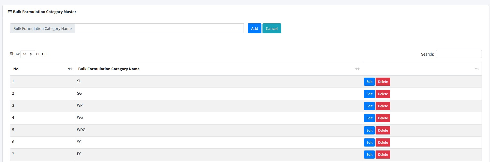
Step 6 : Formulation Master
The Formulation Master is a crucial module used to define the comprehensive cost structure of a finished product formulation. It integrates various cost components such as labor, power consumption, maintenance, and other overheads to calculate the total production cost and the final cost per unit (Liter/KG).
How to Add/Update a Formulation
To add a new formulation or update an existing one, follow these steps:
- Formulation Name: Enter the type of formulation (e.g., EC, SC, SG, GR).
- Measurement: Select the unit of measurement for the batch (e.g., KG or LTR).
- Batch Size: Enter the total production quantity (in KG or LTR, based on the selected Measurement) for one manufacturing batch.
- No of Labours: Input the total number of laborers assigned to work on this specific formulation batch.
- Supervisors: Enter the count of supervisors overseeing this batch.
- Labour Charge: This field reflects the per-labor cost and is *auto-calculated* based on the number of laborers and the labor rate defined in the Cost Variable Master.
- Labour Cost: This represents the total calculated labor cost for the batch (e.g., 10-hour or 12-hour shift rate applied per labor).
- Power (Unit): Enter the total power units (e.g., KWH) estimated to be consumed during the production of this batch.
- PowerCharge (Unit): This field displays the price per power unit, sourced automatically from the Cost Variable Master.
- Total Power Cost (Unit): This is an *auto-calculated* field, representing the total power expense for the batch (Power Units × Power Charge).
- Maintenance: Input any specific machinery maintenance costs associated with this particular batch production.
- Other Cost: Enter any additional miscellaneous expenses or overheads for the batch.
- Total Cost: This is an *auto-calculated* field, summing up all ingredient costs (from BOM, if applicable), labor costs, power costs, maintenance, and other expenses for one entire batch.
- Add Buffer: You can enter an optional additional cost, either as a percentage or a fixed amount, to account for unforeseen expenses or profit margins.
- CostPerLiter/BatchSize: An *auto-calculated* field that shows the cost per liter or KG before adding any buffer (Total Cost ÷ Batch Size).
- Final Cost/Ltr BatchSize: This is the *final auto-calculated production cost* per liter or KG, after the 'Add Buffer' amount has been applied.
After entering all the required details, click the Add button to save the new formulation. To discard changes, click Cancel.
📸 Screenshot – Formulation Master
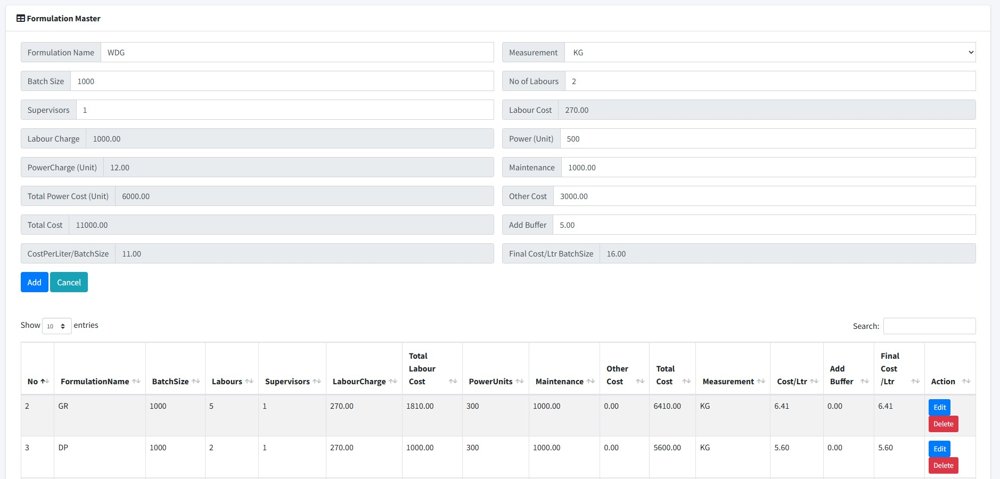
Step 7 : RM Master
The RM Master (Raw Material Master) is used to maintain the complete list of raw materials required for production, along with their measurement units and optional purity details. This master ensures that all production and costing modules use standardized and accurate RM information.
How to Add RM Master
- Navigate to Master ➜ RM Master.
- Select RM Category (Technical, Solvent, Emulsifier, Other, etc.).
- Enter the RM Name (e.g., Emulsifier X).
- Select the unit of measurement (KG, LTR, GM, etc.).
- Check this box if a purity percentage is mandatory for this raw material. This is typically required for technical materials where concentration affects usage and costing.
- Enter the purity percentage (e.g., 95%, 70%). Field becomes mandatory only when “IsPurity Required” is checked.
- Click the Add button to save the new RM item.
- The new RM item will appear in the list below.
📸 Screenshot – RM Master
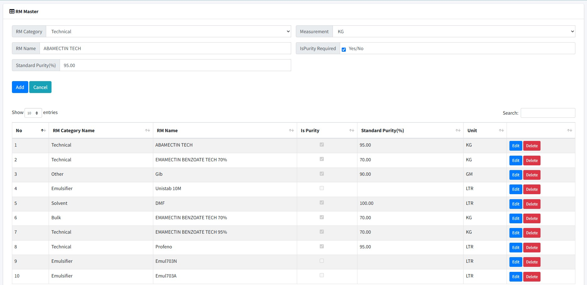
Step 8 : Bulk Product Master
The Bulk Product Master is used to define finished bulk products (in-house or outsource) along with their measurement units, taxation and formulation category.
2. How to Add a Bulk Product
To add a new bulk product:
- Select the Main Category.
- Enter a Bulk Product Name.
- Select Measurement and GST%.
- Choose whether the source is Inhouse or Outsource.
- Select the correct Formulation Category (EC, WG, SC, etc.).
- If required, enable NRV Calculation and Combo Product.
- Click Add to save.
📸 Screenshot – Bulk Product Master
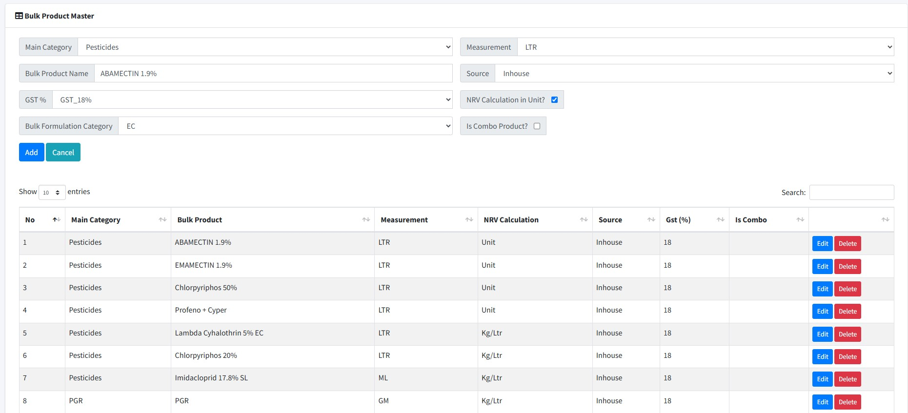
Step 9 : Price Master
The Price Master module is used to define and manage the pricing details for Bulk Products and Raw Materials. This pricing is used across cost calculations, NRV calculations, purchase comparisons, and production costing.
1. RM Price Master
The RM Price Master is used to record and manage the purchase prices of raw materials (RM). This information is essential for accurate cost calculations in the BOM and other reports.
How to Add an RM Price Entry
- Go to Price Master ➜ RM Price Master.
- RM Category: Select the category of the raw material (e.g., Emulsifier, Solvent).
- Date of Purchase: Select the date when the material was purchased.
- RM Name: Choose the specific raw material from the list.
- Rate/Kg-Ltr(Rs): Enter the base price per unit (Kg or Ltr) of the material.
- Rate Full Purity: Check this box if the entered rate corresponds to 100% purity of the material. If the material has a lower purity, the system will adjust the price accordingly.
- Purity(%): Enter the actual purity of the material if it's less than 100%.
- Actual Price/Kg-Ltr: This field is auto-calculated based on the rate and purity.
- Quantity: Enter the total quantity purchased.
- Transport: Add any transportation costs associated with the purchase.
- Total Rate/Ltr: This is the final calculated cost per unit, including transportation.
- Click the Add button to save the price entry.
📸 Screenshot – RM Price Master
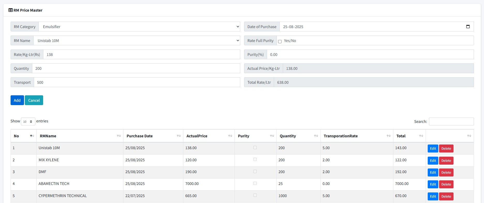
2. PMRM Price Master
The PMRM Price Master is used to record and manage the purchase prices of packing materials (PM). This is crucial for accurate costing of finished goods.
How to Add a PMRM Price Entry
- Go to Price Master ➜ PMRM Price Master.
- PMRM Category: Select the category of the packing material (e.g., Bottle, Shipper).
- PMRM Name: Choose the specific item from the list (e.g., Bottle 500 ML).
- Date of Purchase: Select the date when the material was purchased.
- Price: Enter the base price of the material.
- Transportation: Add any transportation costs per unit associated with the purchase.
- No. of Units/KG: Enter the number of units per kilogram, if applicable.
- Loss (%): Specify any expected loss percentage during handling.
- Price/Unit: This field displays the final calculated price per unit, considering all inputs.
- Click the Add button to save the price entry.
📸 Screenshot – PMRM Price Master
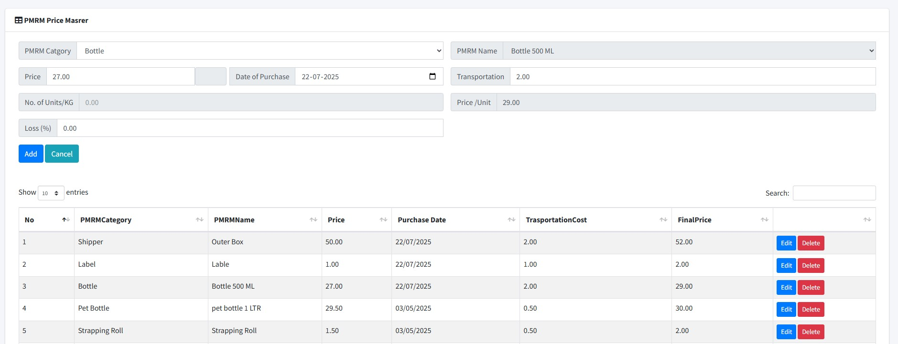
3. RM Price Estimate
The RM Price Estimate page is used to record and manage estimated and actual prices for raw materials. This helps in tracking price variations and forecasting before the final prices are available.
How to Add an RM Price Estimate
- Go to Price Master ➜ RM Price Estimate.
- Select the RM Category from the dropdown menu (e.g., Technical).
- Choose the specific RM Name from the list.
- The system display the actual rate and quantity for selected raw material name.
- Select the date of purchase.
- Enter the Estimate Rate/Kg-Ltr(Rs) for the material.
- Rate Full Purity: Check this box if the estimated rate is for 100% purity.
- Purity(%): Enter the expected purity of the material.
- Actual Price/Kg-Ltr: This is auto-calculated based on the estimated rate and purity.
- Total Rate/Ltr: This is the final estimated cost per ltr/kg, including transportation.
- Click the Add button to save the price estimate.
📸 Screenshot – RM Price Estimate
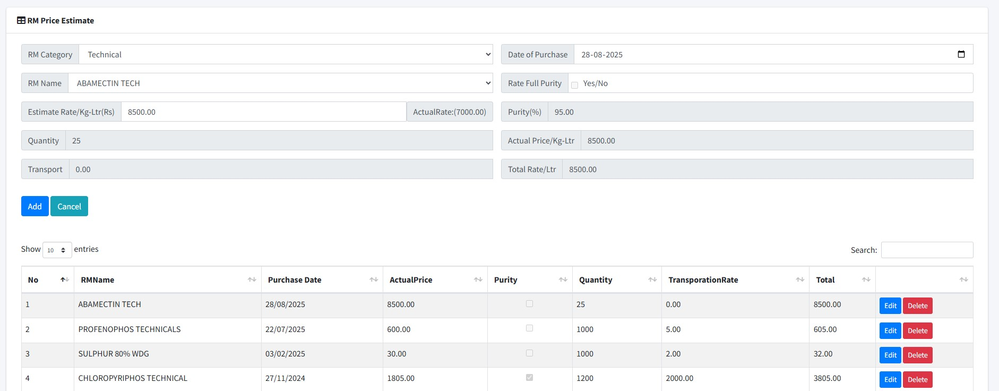
Step 10 : BOM (Bulk Recipe)
The BOM (Bulk Recipe) Module is where you define the precise formulation for each of your bulk products. This involves selecting ingredients, specifying their quantities and costs, and calculating the final cost of the bulk material before it goes into packaging.
1. How to Create a BOM
First, you need to link a bulk product to a batch size and measurement unit.
- Navigate to Cost ➜ BulkRecipe (BOM).
- Select the Main Category (e.g., Pesticides).
- Choose the Bulk Product you want to create a recipe for (e.g., ABAMECTIN 1.9%).
- Enter the standard Batch Size (e.g., 1000).
- Select the Measurement unit (e.g., LTR).
- Click the Add button to create the BOM entry. It will then appear in the list below.
📸 Screenshot – BOM Creation
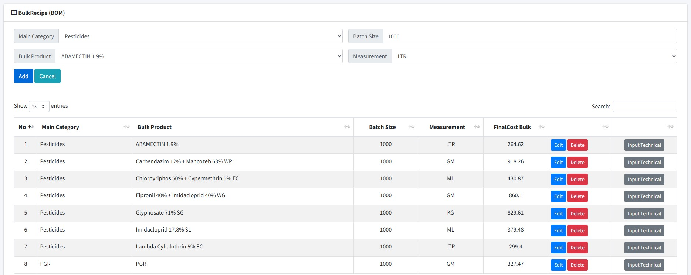
2. Input Technical Details (Adding Ingredients)
Once the BOM entry is created, click the Input Technical button for that product to open the recipe definition screen.
Adding Ingredients
- Use the Search RM dropdown to find and select an ingredient (e.g., ABAMECTIN TECH).
- If it's an Technical, check the Formulation? box and enter the required purity percentage (e.g., 1.90). The system will calculate the required quantity based on the batch size.
- For other ingredients like solvents, enter their quantity(ltr/kg) directly.
- The Rate and Transportation costs are automatically fetched from the price masters.
- Click Add to include the ingredient in the recipe.
- Repeat this process for all ingredients in the formula. The system will display the total amount at the bottom.
📸 Screenshot – Recipe Definition
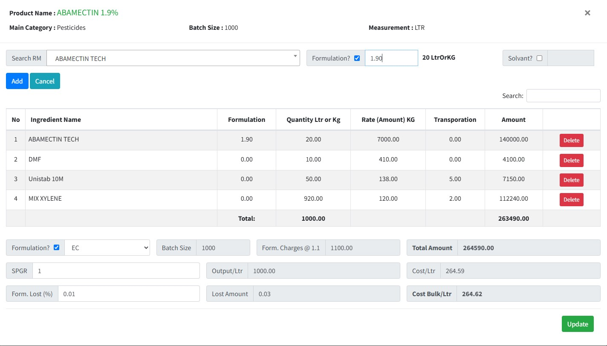
Final Cost Calculation
After adding all ingredients, configure the final costing details at the bottom of the screen:
- Select the Formulation type (e.g., EC), which add formulation charges.
- Enter the SPGR (Specific Gravity) and any Form. Lost (%).
- The system calculates the final Cost/Ltr and Cost Bulk/Ltr based on all inputs.
- Click the Update button to save the complete recipe and its final cost.
📸 Screenshot – Recipe Definition
Step 11 : Product Packing Material Master
The Product Packing Material Master is used to define the complete packing configuration for a finished product. This includes the primary packing, shipper (outer box), and inner components, along with their respective costs.
1. How to Define a Product's Packing Configuration
This screen allows you to associate a bulk product with its specific packing materials and generate a unique Part Code.
- Navigate to Master ➜ Product Packing Material Master.
- Bulk Product: Select the finished bulk product.
- Packing Name: Choose the primary packing size (e.g., 1 LTR).
- Shipper Detail: Check the "Shipper" box if an outer box is used. Select the shipper size and the number of units it holds (e.g., 20 units per shipper).
- Inner Detail: Similarly, configure if there is an inner packing component.
- Part Code: A unique code is generated based on your selections(If Availables).
- Click Add to save this packing configuration.
📸 Screenshot – Product Packing Material Master
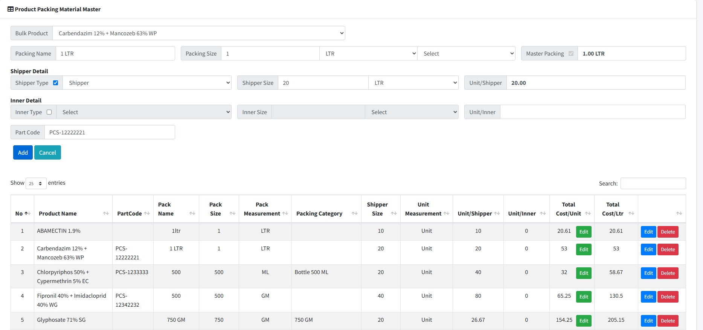
2. Adding Packing Material Costs
After defining the configuration, you must specify the cost for each packing component.
- In the product list, find the item you want to price and click the Edit button in the Total Cost/Ltr column.
- A new window will open. Here, you will add the costs for the Primary Material (PM), Shipper, and any Inner packaging.
- Type: Select PM, Shipper, or Inner.
- PM Type / PM Name: Choose the specific packing material (e.g., Pouch).
- PM Price (Cost/Unit): Enter the cost for a single unit of this material.
- Click Add. The material and its cost will appear in the table.
- Add all packing components for the product (e.g., the Pouch itself and the Shipper Box).
- The Total and Final Pack/Unit costs are calculated automatically.
📸 Screenshot – Packing Material Costing

Step 12 : Packing Style Labour Costing Master
The Packing Style Labour Costing Master is a detailed module for defining the specific labour tasks and power consumption associated with different packing styles. This allows for highly accurate cost calculations for the packing process.
How to Configure Packing Style Labour and Power Costs
- Navigate to Master ➜ Packing Style Labour Costing Master.
- Packing Category & Size: Select the packing category and size you want to configure (e.g., GM, 250.00).
- Packing Style Name: Choose the specific packing style (e.g., Bottle + Manual Label + Shrink).
- The Packing Size and Measurement will be auto-filled based on your selection.
Add Labour Task
In this section, you select all the individual labour activities required for the chosen packing style.
- Check the boxes next to each applicable task (e.g.,Bulk Charge, Pouch Filling, Labeling, Capping, Inner Box Cello Tape).
- The system will sum up the costs associated with each selected task to calculate the Total Labour / Task cost.
Add Power Details / Hour
This section is for specifying the power consumed by machinery during the packing process.
- Check the boxes for all relevant power-consuming activities (e.g., Filling, Capping, Shrinking).
- The system sums the power consumption of each activity to determine the Total Power cost.
Once all details are selected, click the Add button to save the configuration. It will then appear in the list at the bottom, showing the total task and power costs for that specific packing style and size.
📸 Screenshot – Packing Style Labour Costing Master

Step 13 : Product wise Labour Cost
The Product wise Labour Cost module is where you calculate the final per-unit cost for a product by combining labor, power, machine output, and other overheads. This screen brings together various master settings to determine the total cost of the packing process for a specific product configuration.
How to Add a Product wise Labour Cost Entry
To calculate the labour and other costs for a product, you need to fill in the details based on its packing style and production line output.
- Navigate to Cost ➜ Product wise Labour Cost.
- Bulk Product: Select the bulk product (e.g., ABAMECTIN 1.9%).
- Packing Size: Choose the packing size for the product (e.g., 1.00-LTR).
- Packing Style: Select the packing style (e.g., Bottle + Manual Label +Shrink + Shipper). This is pre-configured in the Packing Style Name.
1. Filling Machine Output
- Storck / Nosel: Enter the number of nozzles on the filling machine.
- Total Output/Minut/Filling Line: Specify the machine's output per minute.
- Total Out Put In Liter Or KG/Shift and Total out put Bottels in Net Shift Hours : The system auto-calculates the total production output in Liters or KG per shift based on the machine's output rate.
2. Total Labour Costing
- Supervisor: Enter the number of supervisors assigned to this packing line.
The Total Labour & Supervisior Costing is auto-calculated based on rates from the Cost Variable Master. - Total Power Cost: The total power consumption cost is automatically calculated based on the power units defined in the Packing Style Labour Costing Master and the power rate from the Cost Variable Master.
3. Other & Final Costing
- Other Costing: Enter any additional overheads such as Unloading, Loading, Machinary Maintatnce, and Admin Expence.
- Final Costing: The system calculates the Total Costing by summing up all labor, power, and other expenses. Based on the Total Output in Liter, it provides a Final per liter labour costing.
- Additional Cost (Buffer): You can add an optional buffer amount per liter to get the final Net Labour Cost/Ltr and Final Per Unit Labour Cost.
- Click Add to save the entry.
📸 Screenshot – Product wise Labour Cost
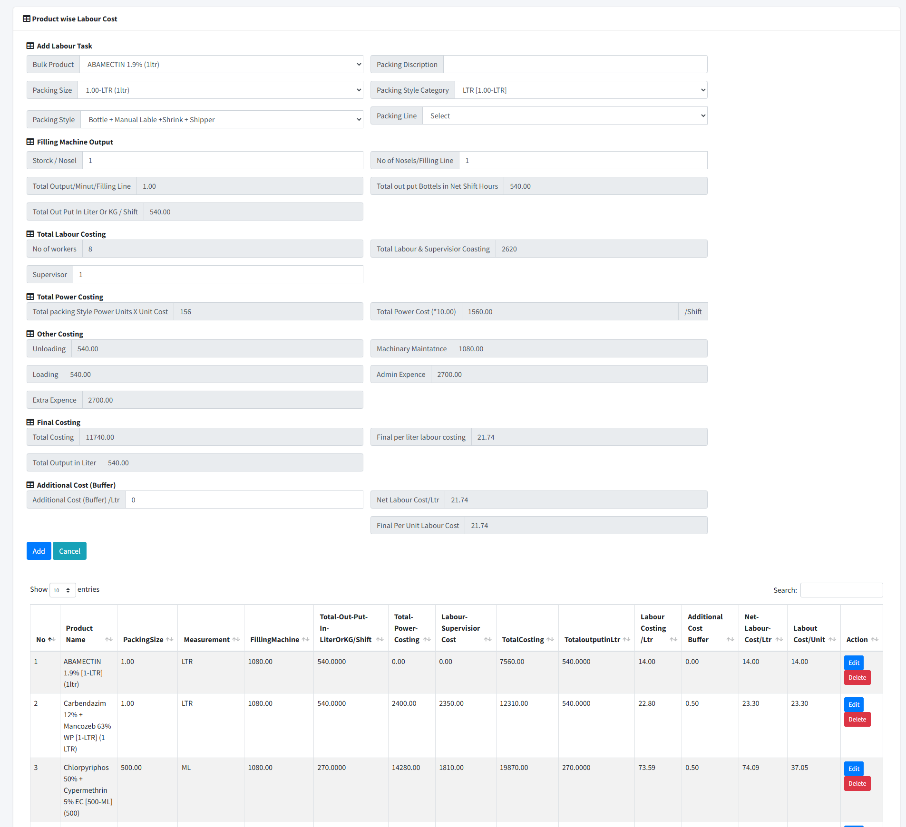
Step 14 : Finished Goods Pricing Report
The Finished Good Pricing Report is the final reporting module where all the costs entered throughout the system come together. It provides a summarized and a detailed breakdown of the total cost for each finished product, giving you a clear picture of your final (NRV).
1. Finished Good Pricing Summary
Navigate to Reporting ➜ Finish GoodPricing Report. This screen shows a summary of all your finished products.
- You can filter the list by selecting a specific Bulk Product and clicking Get Data.
- The table provides a high-level overview of the costs for each product:
- Bulk Cost (with Interest): The total cost of the raw materials and formulation.
- PM Cost/Unit: The cost of all packing materials for one unit.
- Labour Cost/Unit: The per-unit labour cost.
- Packing Loss: The cost associated with any packing loss.
- Total Amount /Unit: The sum of all the above costs for a single unit.
- Final NRV: The final NRV of the product.
- Click the Report button on any row to see a detailed breakdown.
📸 Screenshot – Finished Good Pricing Report Summary
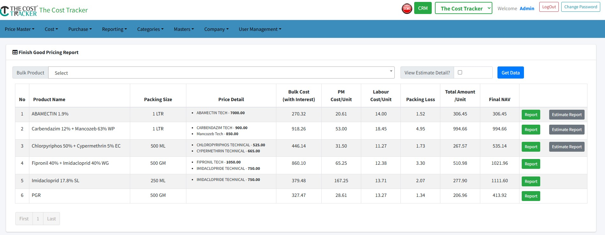
2. Detailed Cost Breakdown Report
When you click the Report button, a detailed view opens, showing every component of the product's cost.
Ingredient & Bulk Cost
This section shows the recipe, including each Ingredient, its formulation percentage, quantity, rate, and total amount. It then summarizes the Final Bulk Cost/Ltr or Kg.
📸 Screenshot – Detailed Report (Part 1)
 ]-1.jpg)
Packing, Labour & Final Cost
This section breaks down the remaining costs:
- PM Costing/Unit: Lists the cost of each individual packing material (e.g., Pouch, Shipper).
- Other Costing/Unit: Shows costs for Labour and Packing Loss.
- Final Cost Packing Wise: This is the grand total, combining the bulk cost with packing and other costs to give you the final Per Unit Costing.
📸 Screenshot – Detailed Report (Part 2)
 ]-2.jpg)
Step 15 : Actual vs. Estimate Report
The Actual vs. Estimate Report provides a comparative analysis between the estimated costs and the actual costs of a finished product. This allows you to track cost variations, identify reasons for differences, and refine future estimations for better accuracy.
1. Comparison View
To access the report, navigate to Reporting ➜ Finish GoodPricing Report and check the View Estimate Detail? checkbox. The report will then display both "Actual" and "Estimate" rows for each product.
- Actual: Shows the final cost based on the confirmed prices from the RM Price Master.
- Estimate: Shows the projected cost based on the provisional prices from the RM Price Estimate master.
- You can click the Actual Report or Estimate Report button to see the detailed breakdown for each.
📸 Screenshot – Comparison View
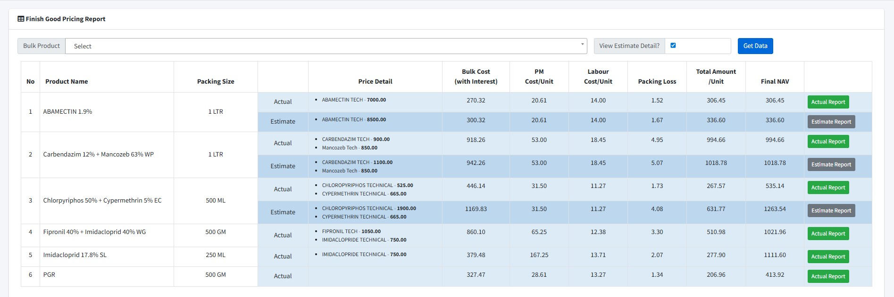
2. Estimated Cost Breakdown Report
The estimate report is generated based on the prices entered in the RM Price Estimate master. It follows the same detailed breakdown structure as the actual cost report but uses provisional data for forecasting and budgeting.
Ingredient & Bulk Cost (Estimate)
This section shows the estimated recipe cost, including each Ingredient, its formulation percentage, quantity, estimated rate, and total estimated amount. It summarizes the Final Bulk Cost/Ltr or Kg (Estimate).
📸 Screenshot – Estimate Report (Part 1)
(Estimate) ]-1.jpg)
Packing, Labour & Final Cost (Estimate)
This section breaks down the remaining estimated costs:
- PM Costing/Unit: Lists the estimated cost of each individual packing material.
- Other Costing/Unit: Shows estimated costs for Labour and Packing Loss.
- Final Cost Packing Wise: This is the grand total, combining the estimated bulk cost with packing and other costs to give you the final Per Unit Costing (Estimate).
📸 Screenshot – Estimate Report (Part 2)
 ]-21.jpg)
Product Interest Master
The Product Interest Master is used to apply an interest percentage to the cost of bulk products.
How to Add Product Interest
- Navigate to Master ➜ Product Interest Master.
- Select a Bulk Product from the dropdown list. The system will automatically fetch and display its Bulk Cost/Ltr.
- Enter the desired Bulk Interest percentage (e.g., 5 for 5%).
- The system will automatically calculate the Interest Amount and the new Total Amount (Bulk Cost + Interest Amount).
- Click the Add button to save the record. The new entry will appear in the list below.
📸 Screenshot – Product Interest Master
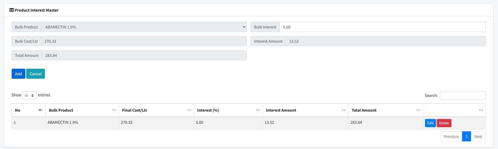
Packing Difference Master
The Packing Difference Master interface allows users to view and manage packing differences for bulk products. This screen enables the selection of a specific bulk product, retrieval of its packing data, and modification of associated packing difference values.
How to Use
- Select Bulk Product: In the "Bulk Product" field, select the desired product (e.g., "ABAMECTIN 1.9%") from the dropdown list.
- Get Data: Click the Get Data button to retrieve the packing difference information for the selected bulk product. The system will populate the table below with relevant data.
-
View and Edit Packing Differences:
- The table displays the packing details for the selected product.
- To modify the values, directly input the new numbers into the editable fields:
- Suggested Pack Diff Ltr
- PCS Company
- MHA
- Bulk
-
Update Changes:
- After making the necessary changes in the editable fields, click the blue Update button on the left side of the row to save your modifications.
📸 Screenshot – Packing Difference Master
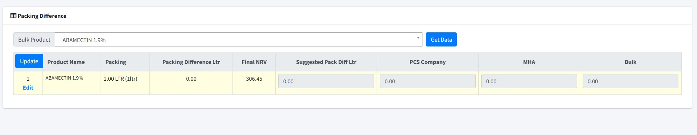
MRP Price Master
The MRP Price Master is a crucial module for setting and adjusting the Maximum Retail Price (MRP) for your finished products. This screen allows you to fetch cost-based suggested prices, apply margins, and set the final MRP along with other company-specific cost components.
How to Set MRP
- Select Bulk Product: From the "Bulk Product" dropdown menu, choose the product for which you want to set the MRP (e.g., ABAMECTIN 1.9%).
- Get Data: Click the Get Data button. The system will load a table with all available packing sizes for the selected product, populating it with suggested pricing information.
-
Adjust Margins and Final Prices:
For each packing size in the table, you can adjust the following editable fields:
- Percent Of Margin MRP (%): Enter a percentage value here to add a profit margin. This will dynamically adjust the "Suggested MRP."
- Final MRP: Manually enter the final MRP for the product. This can be the same as the "Suggested MRP" or a different value based on market strategy.
- PCS Company: Input the value for PCS (Printing, Capping, Sealing) for the company.
- MHA: Input the value for MHA (Material Handling & Administration).
- Bulk: Input any additional bulk-related costs or adjustments.
-
Update the Record:
After entering the desired values, click the blue Update button on the left side of the row to save the changes for that specific product packing.
📸 Screenshot – MRP Price Master
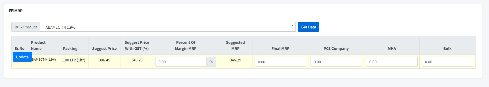
Supervisor Master
The Supervisor Master module is used to create and manage a list of supervisors. This master list is utilized in other parts of the application where supervisor assignment is required, such as in the Product wise Labour Cost module to calculate labor and oversight costs.
How to Use the Supervisor Master
1. Adding a Supervisor
- Navigate to Others Master ➜ Supervisor Master.
- Enter the full name of the supervisor in the Supervisor Name input field.
- Click the Add button to save the new supervisor.
- Clicking Cancel will clear the input field.
2. Managing Existing Supervisors
The table below the input form lists all existing supervisors and provides several management options:
- Search: Use the search box on the right to quickly find a supervisor by name.
- Edit: Click the Edit button on any row to modify the supervisor's name. The name will populate in the input field above for you to change and save.
- Delete: Click the Delete button to permanently remove a supervisor from the list. A confirmation prompt will appear before deletion.
- Pagination: Use the "Previous" and "Next" buttons to navigate through multiple pages of supervisor entries.
📸 Screenshot – Supervisor Master
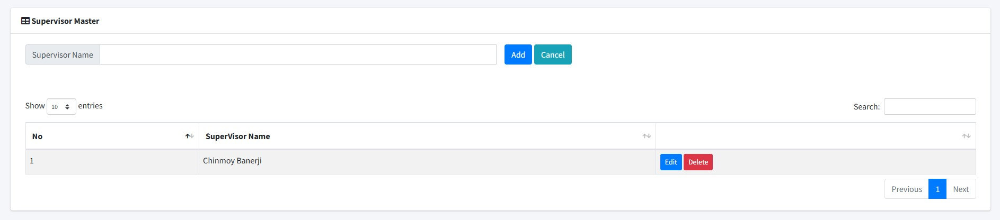
Price List Terms & Conditions - Other Company Master
The Price List Terms & Conditions - Other Company Master module is used to define and associate specific terms and conditions with price lists for different external companies. This module allows you to input detailed clauses and optionally assign a color code for visual distinction, ensuring clarity and consistency in business agreements.
How to Add Price List Terms & Conditions
1. Inputting New Terms & Conditions
- Navigate to Others Master ➜ Price List Terms & Conditions - Other Company Master.
- Terms & Condition: In the large text area labeled "Terms & Condition," enter the full text of the specific term or condition you wish to add (e.g., "Payment due within 30 days," "Minimum order quantity applies," "Freight charges extra").
- Color Code: In the "Color Code" field, you can optionally enter a color code (e.g., a hexadecimal color code like #FF0000 for red) or select a color, which might be used to visually categorize or highlight these terms elsewhere in the system.
- Click the Add button to save the new term(s) and condition(s).
- Clicking Cancel will clear the input fields without saving.
*(Note: This screen is for adding new terms and conditions. Management (editing/deleting) of existing entries is likely handled in a separate interface.)*
📸 Screenshot – Price List Terms & Conditions Master

Purchase Workflow: From Vendor to Final PO
This section outlines the complete, sequential workflow for purchasing raw materials, starting from managing vendors to creating requirements and finalizing purchase orders.
Step 1: Vendor Master
The Vendor Master is the first step, where you manage all supplier information. This is critical for the entire procurement workflow.
1. Managing Vendor Companies
- Navigate to Purchase ➜ Vendor Master.
- Fill in the vendor's details: Company Name, GST, Address, and Email.
- Click Add to save the new vendor.
📸 Screenshot – Vendor Company Master Screen
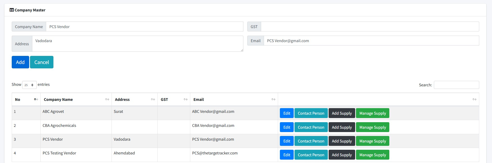
2. Managing Contact Persons
- In the vendor list, click the Contact Person button.
- Add or manage contact details, including name, designation, and inquiry preferences.
📸 Screenshot – Manage Contact Person Modal
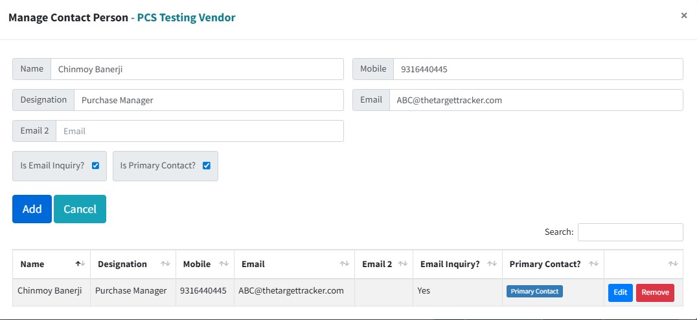
3. Managing Vendor Supplies (Raw Materials)
- Click Add Supply to associate a raw material with a vendor.
- Click Manage Supply to view or remove existing associations.
📸 Screenshot – Add Supply Modal
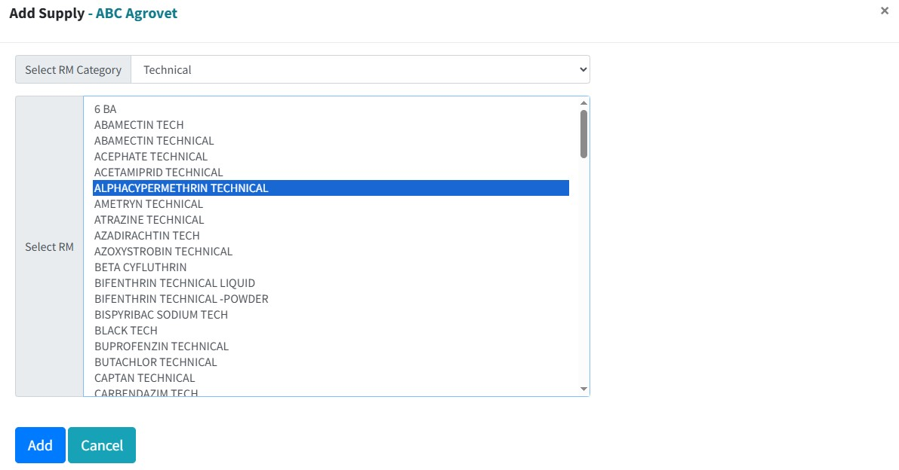
Step 2: Vendor/RM List
This screen provides a flexible way to view the relationships between your vendors and the raw materials they supply.
1. List of Supply By Company
- Select the Company radio button, choose a vendor, and click Search to see all materials they supply.
📸 Screenshot – List of supplies filtered by a specific company
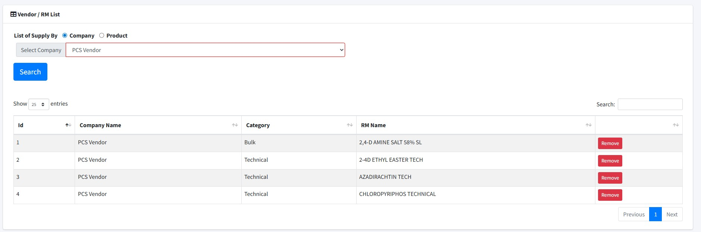
2. List of Supply By Product
- Select the Product radio button, choose a material, and click Search to see all vendors who supply it.
📸 Screenshot – List of vendors filtered by a specific product
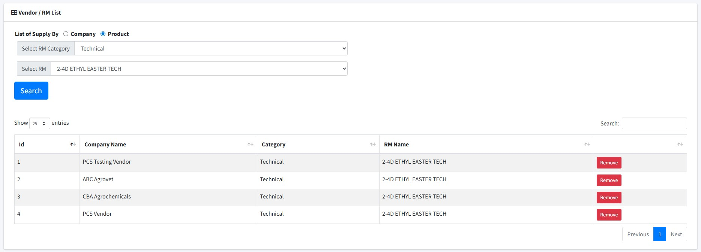
Step 3: RM Requirement Master
This is where the procurement cycle begins by logging a new requirement for a raw material.
- Navigate to Purchase ➜ RM Requirement Master.
- Fill in the form: Date, Select RM, QTY, Standard Purity(%), and Requirement By.
- Click Add to create a new requirement with a unique Req No.
📸 Screenshot – RM Requirement Master screen
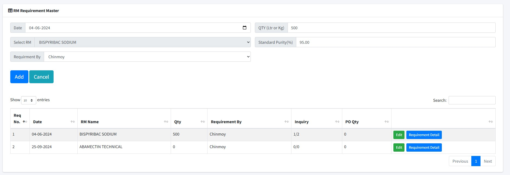
Step 4: Vendor RM Inquiry Master
Log and track price inquiries for raw materials from your vendors.
- Navigate to Purchase ➜ Vendor RM Inquiry Master.
- Fill in the inquiry details: Inquiry Date, Mode of Inquiry, Select Vendor, and Contact Person.
- Enter the quoted price details for each listed raw material.
- Click Add to save the inquiry record.
📸 Screenshot – Vendor RM Inquiry Master screen
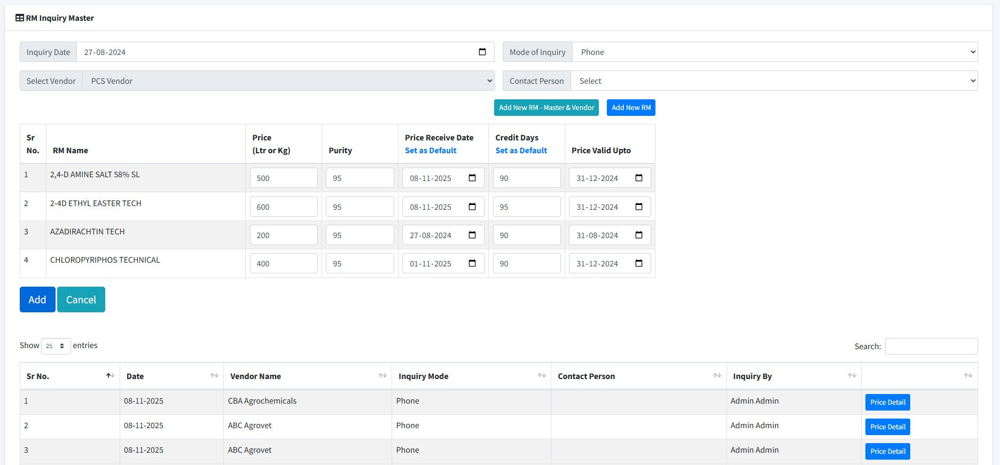
Step 5: RM Price Inquiry List
This report allows for easy price comparison of all vendor quotes for a specific raw material.
- Navigate to Purchase ➜ RM Price Inquiry List.
- Find the desired material and click Inquiry Detail.
- The subsequent screen shows a side-by-side comparison of all quotes received for that material.
📸 Screenshot – RM Price Inquiry List
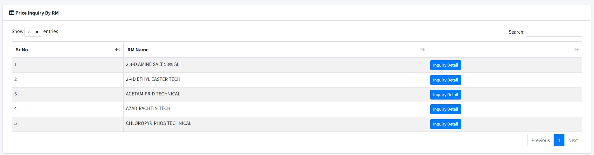
📸 Screenshot – Comparative Price Inquiry List
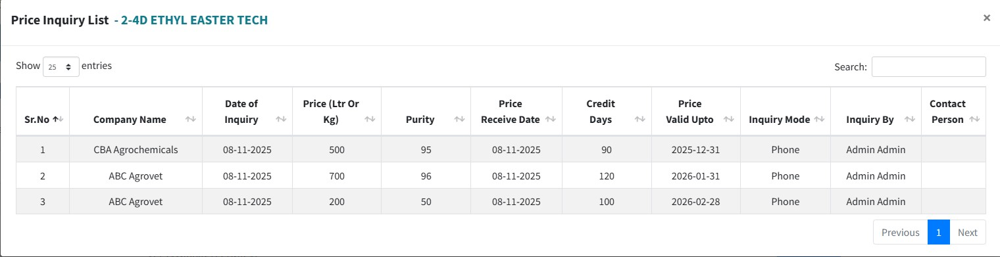
Step 6: Company-wise Approved PO List
After a price is approved in the Requirement Detail screen, you can review all items ready for a PO, grouped by vendor.
- Navigate to Purchase ➜ Companywise Approved PO List.
- This screen summarizes companies with items ready for a PO.
- Click Details to see all approved items for a specific vendor.
📸 Screenshot – Company-wise Approved PO List
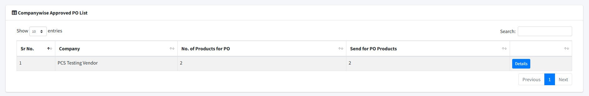
📸 Screenshot – Approved PO Details
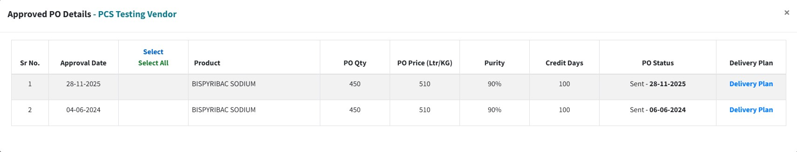
Step 7: PO Request List
This step formalizes the PO by assigning a PO number and attaching the official document.
- Navigate to Purchase ➜ PO Request List.
- Find the approved PO, enter the official PO# and PO Date.
- Upload the signed PO PDF document and click Save.
📸 Screenshot – PO Request List
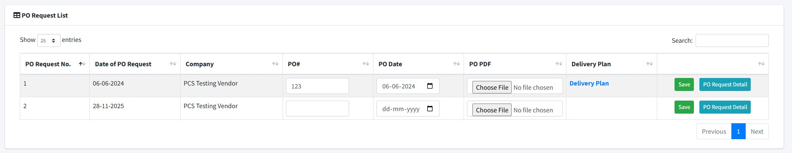
Step 8: Final PO List
The final stage is to track the delivery and record the receipt of the purchased materials.
- Navigate to Purchase ➜ Final PO List.
- This screen gives an overview of all finalized POs, showing PO QTY, Received QTY, and Pending QTY.
- Click Receipt Detail to log the quantity of goods received against a PO.
📸 Screenshot – Final PO List
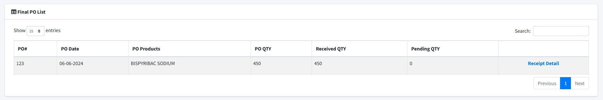
Cost Factors
This section focuses on tools that help you manage your product's market presence, pricing strategies, and brand identity.
Product Category
The Product Category master lets you create and manage categories for finished products — e.g., Classic, Premium, Royal. Categories help organise products and apply category-level pricing or reports.
How to Add the Product Category
- Navigate to Cost Factors ➜ Product Category.
- In the "Product Category" input field, type the name of the new category (e.g., "Royal").
- Click the Add button to save it. The new category will appear in the list below.
- Clicking Cancel will clear the input field without saving.
📸 Screenshot – Product Category Master
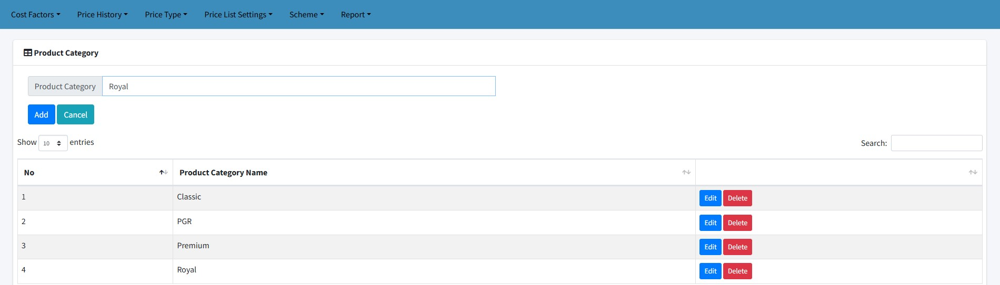
Bulk Company Mapping
The Bulk Company Mapping module allows you to map specific bulk products with particular companies.
How to Create a Bulk Company Mapping
- Navigate to Cost Factors ➜ Bulk Company Mapping.
- In the "Company Name" field, select the name of the company .
- In the "Bulk Product", choose bulk products to associate with the selected company (e.g., "Lambda Cyhalothrin 5% EC").
- Click the Add button to save the mapping. The new entry will appear in the table below.
- Clicking Cancel will clear the input fields without saving.
📸 Screenshot – Bulk Company Mapping Master
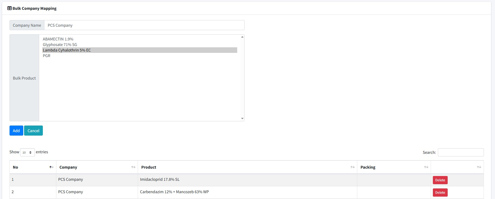
Product Category Bulk Mapping
The Product Category Bulk Mapping module assigns bulk items to a product category for a chosen company. It bridges category-level packaging/recipes with supplier bulk items.
How to Create a Product Category Bulk Mapping
To establish a mapping between a company, a product category, and bulk products, follow these steps:
- Navigate to Cost Factors ➜ Product Category Bulk Mapping.
- In the "Company Name" field, select the name of the company.
- From the "Product Category" dropdown, select the relevant category (e.g., "Premium").
- In the "Bulk" select box, choose bulk products to associate with the selected company and category (e.g., "Lambda Cyhalothrin 5% EC").
- Click the Add button to save the mapping. The new entry will appear in the table below.
- Clicking Cancel will clear the input fields without saving.
📸 Screenshot – Product Category Bulk Mapping Master
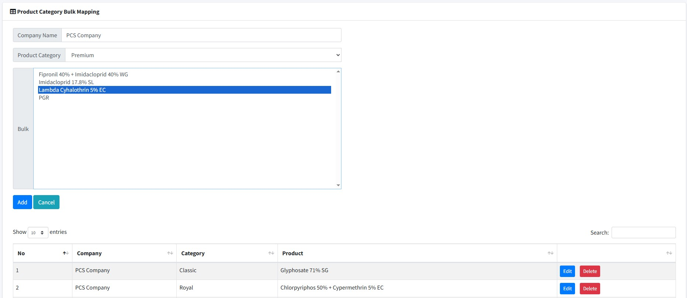
Trade Master
The Trade Master module allows you to create and manage trade names for products, associating them with a specific company. These trade names are used for branding and product identification in marketing and sales processes.
How to Create a Trade Name
- Navigate to Cost Factors ➜ Trade Master.
- In the "Company Name" field, select the company you want to associate with the trade name.
- In the "Trade" input field, enter the desired trade name (e.g., "PCS Lambda").
- Click the Add button to save the new trade name. The entry will appear in the table below.
- Clicking Cancel will clear the input fields.
📸 Screenshot – Trade Master
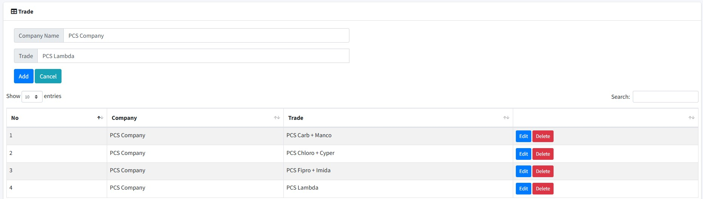
Trade Bulk Mapping
The Trade Bulk Mapping module enables you to associate specific bulk products with various trade names under a chosen company. This is essential for organizing products under different marketing strategies and branding.
How to Create a Trade Bulk Mapping
- Navigate to Cost Factors ➜ Trade Bulk Mapping.
- In the "Company Name" field, select the relevant company.
- From the "Bulk Product" dropdown, choose the bulk product you wish to map.
- In the "Trade" multi-select box, choose one or more trade names to associate with the selected bulk product for the chosen company.
- Click the Add button to save the new mapping. The new entry will appear in the table below.
- Clicking Cancel will clear the input fields.
📸 Screenshot – Trade Bulk Mapping Master
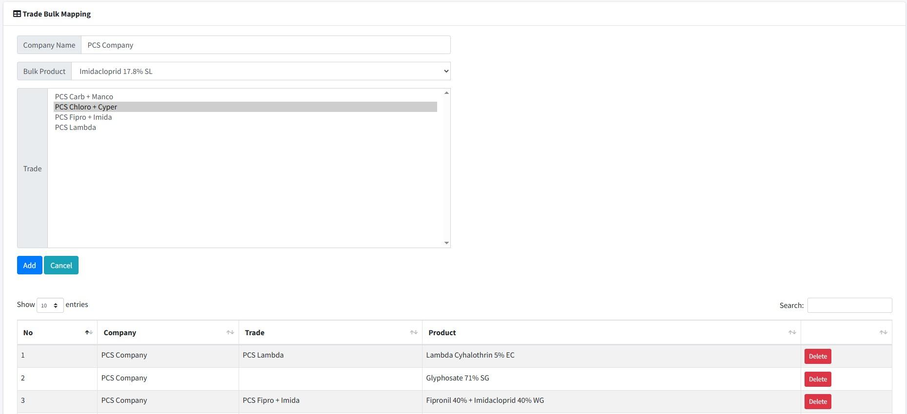
Product Type Master
The Product Type Master module allows you to define and manage various classifications for your products, such as INSECTICIDE, FUNGICIDES, HERBICIDES, or PGR. These product types are essential for organizing your product catalog and can be used for filtering, reporting, and other business logic.
How to Add a Product Type
- Navigate to Cost Factors ➜ Product Type.
- In the "Product Type" input field, enter the name of the new product type (e.g., "PGR").
- Click the Add button to save the new product type. The new entry will appear in the table below.
- Clicking Cancel will clear the input fields.
📸 Screenshot – Product Type Master
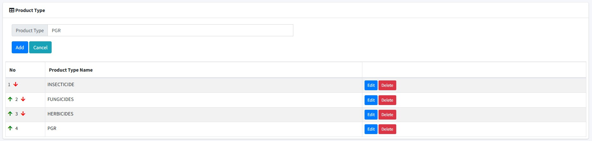
Product Type Bulk Mapping
The Product Type Bulk Mapping module is used to associate specific bulk products with defined product types (e.g., HERBICIDES, INSECTICIDE) for a particular company. This mapping facilitates organized management and reporting of products based on their type.
How to Create a Product Type Bulk Mapping
- Navigate to Cost Factors ➜ Product Type Bulk Mapping.
- In the "Company Name" field, select the relevant company.
- From the "Product Type" dropdown, choose the product type (e.g., "HERBICIDES") you wish to map.
- In the "Bulk" multi-select box, choose one or more bulk products to associate with the selected product type for the chosen company.
- Click the Add button to save the new mapping. The new entry will appear in the table below.
- Clicking Cancel will clear the input fields.
📸 Screenshot – Product Type Bulk Mapping
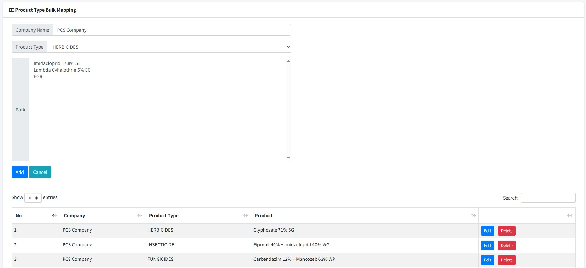
Factory Expense
The Factory Expense module is used to calculate and apply various additional costs to bulk products. This includes factory overheads, marketed charges, and other expenses, ultimately determining the final factory cost per liter or unit for each product. This module also allows for the inclusion of a profit margin.
How to Add/Update Factory Expenses for a Bulk Product
- Navigate to Cost Factors ➜ Factory Expense.
- Select Bulk Product: Choose the specific bulk product from the dropdown list. The system will automatically display its current Bulk Cost/Ltr and MasterPack information.
- Define Additional Costs:
- Enter the percentage for Factory Expense (%). The Factory Expense Amt will be auto-calculated.
- Enter the percentage for Marketed Charges (%). The Marketed Charges Amt will be auto-calculated.
- Enter the percentage for Other (%) expenses. The Other Amt will be auto-calculated.
- The Total Expense for the product will be automatically calculated based on the entered percentages.
- Optionally, enter a Profit (%) to add a profit margin. The Profit Amt and the final Total Cost/Ltr will be adjusted accordingly.
- Click the Add button to save the new or updated expense calculation.
- Clicking Cancel will clear the input fields.
- Click the Report button to generate a detailed report for the selected bulk product's expenses.
📸 Screenshot – Company Factory Expense
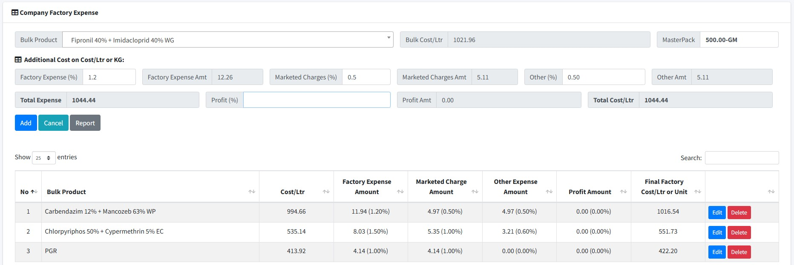
Transportation Cost Master
The Transportation Cost Master module allows you to define and manage all transportation-related costs on a state-by-state basis. This includes primary truckload charges and more detailed, weight-based charges for local transportation, unloading, and cartage.
1. How to Add Main Transportation Costs
- Navigate to Cost Factors ➜ Trasportation Cost Master.
- Select the State from the dropdown menu.
- Enter the Truck Load Charge for a full shipment.
- Enter the Approx No of Carton in 1 lot to help the system calculate the per-carton cost.
- The Approx 1 carton Charge is automatically calculated and displayed.
- Click the Add button to save the record for the state.
📸 Screenshot – Transportation Cost Master
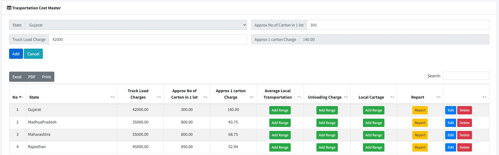
2. How to Add Range-Based Charges
For more detailed costing, you can add charges based on weight ranges for local transport, unloading, and cartage.
- In the table, find the state you want to configure and click the Add Range button under the relevant column (e.g., "Average Local Transportation").
- A pop-up window will appear, allowing you to define charges for specific weight ranges.
- Enter the Start and End values of the range.
- Select the Measurement (e.g., KG).
- Enter the Amount for that specific range.
- Click the Add button in the pop-up to save the range. You can add multiple ranges for each cost type.
📸 Screenshot – Adding Range-Based Charges
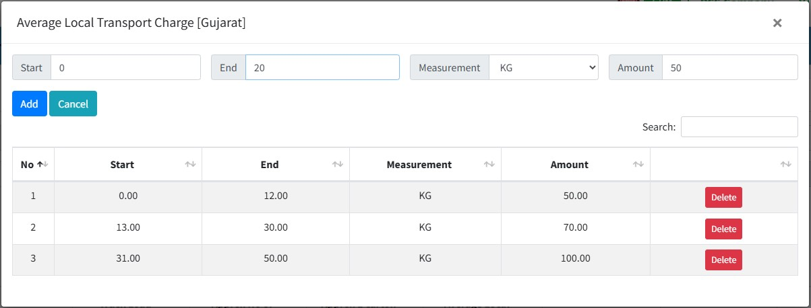
State Wise Cost Factor
The State Wise Cost Factor module allows you to define and manage specific cost factors that vary by state. This is crucial for accurate regional costing and pricing strategies.
The State Wise Cost Factor module helps you define state-level marketing and operational expense percentages. These cost factors are used during pricing to calculate region-specific product costs.
How to Add a State Wise Cost Factor
- Navigate to Cost Factors ➜ State Wise Cost Factor.
- Enter the State Name.
- Select the Product Category (e.g., Premium).
- Enter the relevant Cost Factor value for that state.
- Click the Add button to save the new entry. The new record will appear in the table below.
- Clicking Cancel will clear the input fields.
📸 Screenshot – State Wise Cost Factor
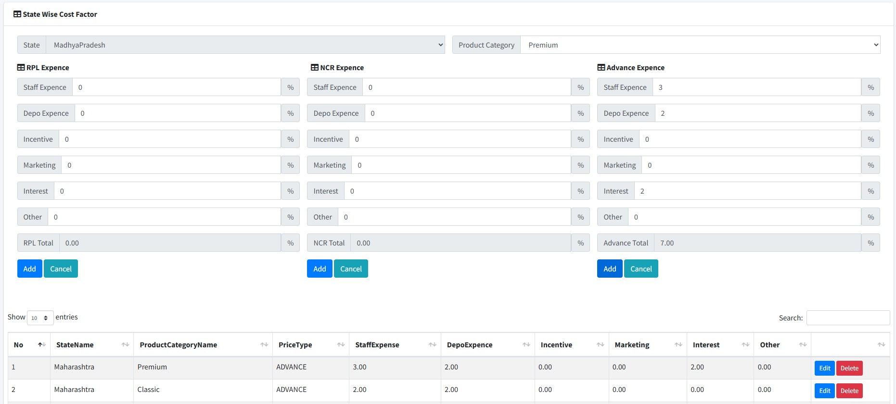
Price Type Management
This section focuses on modules that help you manage different price types, their state-wise applicability, and the order in which states are presented in pricing-related contexts.
Price Type Master
The Price Type Master module is used to define and manage various price types used in price list calculations. These price types are used in modules such as:
- State Wise Cost Factor
- Price List Generation
- Scheme Calculations
- Product Costing (as in The Cost Tracker)
How to Add a Price Type
- Navigate to Price Type ➜ Price Type Master.
- In the "Price Type" input field, type the name of the new price type (e.g., "RPL").
- Click the Add button to save it. The new price type will appear in the list below.
📸 Screenshot – Price Type Master
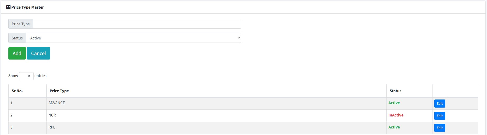
Product Price Type & State Mapping Master
The Product Price Type & State Mapping Master module allows you to map products to their applicable price types across different states. This enables state-wise pricing strategies and ensures accurate price list generation based on regional requirements.
How to Add a Product Price Type & State Mapping
- Navigate to Price Type ➜ Product PriceType & State Mapping Master.
- Use the "Search for product" field to find a specific product
- The table will filter automatically as you type
- To enable a state: Check the checkbox under that state name
- To disable a state: Uncheck the checkbox under that state name
- Click All to enable all states for that price type.
- Click None to disable all states.
- Update (per row): Saves changes for only that specific product-price type combination
- Update All: Saves all changes made on the page at once
📸 Screenshot – Product Price Type & State Mapping Master

State Order Setup
The Price Setup State Order module allows the to define the sequence in which States will appear across all Price List–related screens, reports and printed price lists.
How to Add State Order Setup
- Navigate to Price Type ➜ Price Setup State Order.
- To move a state up in the list: Click the up arrow (↑) next to its serial number.
- To move a state down in the list: Click the down arrow (↓) next to its serial number.
📸 Screenshot – State Order Screen
Price List Settings
This section focuses on modules that help you manage the details and terms included in your product price lists.
State Wise Contact Person
The State Wise Contact Person Detail module is used to maintain the list of authorized sales or marketing representatives for each state. These details automatically appear in the Price List Report under the “State-wise Contact Information / Sales Head Details” section.
Purpose of This Module
- To define sales contact details for each state.
- To ensure accurate communication of contact names, designation, and branch address in the Price List PDF.
- To help customers, distributors, and sales teams know the correct point-of-contact for each region.
- To maintain multiple state-wise contact entries for large companies.
How to Add a New State Wise Contact Person
- Navigate to Price List Settings ➜ State Wise Contact Person Detail.
- From the State dropdown, select the state (e.g., Gujarat).
- In the Contact Person Name field, enter the name (e.g., Chinmoy Banerji).
- Enter the Mobile No (optional).
- Enter the Designation (e.g., Sales Head).
- Enter the Branch Address (e.g., Ahmedabad).
- Click the Add button to save the contact details.
- Click Cancel to clear all input fields.
📸 Screenshot – State Wise Contact Person
Price List Terms & Conditions
The Price List Terms & Conditions module allows you to define and customize the general commercial terms that appear at the bottom of every generated Price List Report. These terms help specify important policies such as credit terms, taxes, shipment conditions, payment rules, and jurisdiction.
How to Add Terms & Conditions
- Navigate to Price List Settings ➜ Price List Terms.
- In the Terms & Condition text box, type or paste your desired T&C content.
- In the Color Code field, choose the color for the text (e.g., #0000FF for blue). This color will appear in the Price List Report.
- Click Add to save the T&C.
- Click Cancel to clear the input fields.
📸 Screenshot – Price List Terms & Conditions

Price List Bank Detail
The Price List Bank Detail module allows you to store and manage state-wise banking information used in the footer of the Price List Report. These bank details are essential for ensuring that customers have accurate payment instructions such as account number, IFSC code, branch details, and the account holder name.
How to Add Bank Details for a State
- Navigate to Price List Settings ➜ Price List Bank Details.
- Select the appropriate State from the dropdown menu (e.g., Gujarat).
- In the field Bank Terms Title Content, enter a suitable heading such as “Bank Details”. This will appear in the price list under banking information.
- Fill in the following details:
- Cheque in Favour Of: Enter the payee name (e.g., Emen Retail Infotech Pvt Ltd).
- IFSC Code: Enter the bank’s IFSC code (e.g., IFSC0001).
- Bank Name: Enter the name of the bank (e.g., ABC Bank).
- Branch Name: Enter the branch name (e.g., Ahmedabad).
- Account No: Enter the bank account number (e.g., 000000011).
- City: Enter the city of the bank branch (e.g., Ahmedabad).
- Click the Add button to save the bank details for the selected state.
- Clicking Cancel will clear all the input fields.
📸 Screenshot – Price List Bank Detail
Price List Lifting Show / Hide Detail
The Price List Lifting Setting module allows you to control the visibility of each product in the Price List Report on a state-by-state basis. This setting ensures that only relevant products appear in the price list generated for each state.
Purpose of This Module
- To show or hide specific products in state-wise price lists.
- To manage product visibility for different markets and regions.
- To customize the product selection for each state.
- To give complete control over what each distributor or region sees.
How to Use the Price List Lifting Setting
- Navigate to Price List Settings ➜ Price List Lifting Setting.
- Use the Search for product bar to quickly find a specific product. The product list will filter automatically as you type.
- The table displays all products along with all available states.
- Each row represents one product.
- Each column (Gujarat, Uttar Pradesh, Haryana, etc.) represents a state.
- To show a product in the price list of a specific state, check the Checkbox under that state.
- To hide the product from a state’s price list, uncheck the box.
- Update (per row) → Saves show/hide settings for that specific product.
- Update All → Saves changes for all products at once.
- All → Selects all states for a product (product will appear in all state price lists).
- None → Deselects all states (product will not appear in any state price list).
Show/Hide Product State-wise :
📸 Screenshot – Price List Lifting Show / Hide Detail
State Wise Turnover Incentive
The State Wise Turnover Incentive Setting module allows you to configure incentive percentages based on the turnover for each state. These incentives are used in the Price List to calculate eligible benefits for distributors in that region.
Purpose of This Module
- To assign turnover-based incentive percentages for each state.
- To manage state-wise promotional schemes or benefits.
- To ensure correct incentive calculations in the final price list.
- To maintain transparent and state-specific commercial policies.
How to Add a Turnover Incentive
- Navigate to Price List Settings ➜ State Wise Turnover Incentive Setting.
- From the State dropdown, select the state for which you want to apply an incentive.
- In the Turnover Incentive Percentage (%) field, enter the incentive value (e.g., 5%).
- Click the Add button to save the incentive percentage.
- The new entry will appear in the table below with State and Incentive Percentage details.
- Clicking Cancel clears the input fields.
📸 Screenshot – State Wise Turnover Incentive
State Wise Special Price List Product Mapping
Price List Brand / Technical Display Setting
The Price List Brand / Technical Display Setting module allows you to
control what information is shown in the Price List Report for each product.
You can choose whether to display:
✔ Technical Name
✔ Brand (Trade) Name
✔ Or both
How to Use the Brand / Technical Display Setting
- Navigate to Price List Settings ➜ Price List Brand / Technical Display Setting.
- The table displays all products along with options for brand and technical name display.
- Each row represents one product.
- To show the brand name of a product in the price list, check the Brand Name checkbox.
- To show the technical name of a product in the price list, check the Technical Name checkbox.
- Update (per row) → Saves display settings for that specific product.
- Update All → Saves changes for all products at once.
📸 Screenshot – Price List Brand / Technical Display Setting
Price List Scheme Active/InActive Setting
The Price List Scheme Active / InActive Setting module allows you to enable or disable various promotional schemes that affect product pricing in the Price List Report. Only the schemes marked as Active will be considered while generating price lists.
Purpose of This Module
- To activate or deactivate promotional schemes for use in price lists.
- To manage which schemes are applicable for a particular price list period.
- To provide flexibility for seasonal, regional, or temporary promotional strategies.
- To ensure pricing is accurate and consistent with company policy.
How to Activate or Deactivate a Scheme
- Navigate to Price List Settings ➜ Scheme Active/InActive Setting.
- The screen displays all available schemes with checkboxes.
- To Activate a scheme → Check the box in the Active/InActive Scheme? column.
- To Deactivate a scheme → Uncheck the box.
- Once updated, only active schemes are considered during price list generation.
📸 Screenshot – Price List Scheme Active/InActive Setting
Price List Product With Packing Active/InActive Settings
The Price List Product With Packing Active/InActive Settings module allows you to control whether a specific product along with its packing size should appear in the Price List Report for each state.
How to Use the Packing Active/InActive Setting
- Navigate to Price List Settings ➜ Product With Packing Active/InActive Settings.
- The table displays all products along with their packing types.
- Each row represents one product.
- To show a product with a specific packing type in the price list, check the Active/InActive checkbox.
- To hide the product with that packing type from the price list, uncheck the box.
- Update (per row) → Saves packing visibility settings for that specific product.
- Update All → Saves changes for all products at once.
📸 Screenshot – Price List Product With Packing Active/InActive Settings
Price List Banner
The Price List Banner module allows you to upload and manage a custom banner image that appears at the top of the Price List Report. This banner can be used for branding, promotional messages, or important announcements.
How to Upload a Price List Banner
- Navigate to Price List Settings ➜ Price List Banner.
- Type the banner title or message in the Banner Text field.
- Select an image from your computer (recommended size depends on price list layout).
- Click the Choose File button to select an image from your computer.
- After selecting the image, click the Upload button to save the banner.
- The uploaded banner will be displayed at the top of the Price List Report.
- Check the Active/InActive toggle to enable the banner.
- Uncheck it to temporarily hide the banner from the price list report.
- To remove or change the banner, simply upload a new image following the same steps.
📸 Screenshot – Price List Banner Screen
State Wise Focus Incentive Setting
The State Wise Focus Incentive Setting module allows the admin to configure special incentive percentages for selected states based on company focus plans. These incentives are time-bound and are applied during price list calculations and scheme processing.
How to Add a Focus Incentive
- Navigate to Price List Settings ➜ State Wise Focus Incentive Setting.
- From the State dropdown, select the state for which you want to apply a focus incentive.
- In the Focus Incentive Percentage (%) field, enter the incentive value (e.g., 3%).
- Select Validity Period, Select the From Date (start) & To Date .
- Click the Add button to save the incentive percentage.
- The new entry will appear in the table below with State and Incentive Percentage details.
📸 Screenshot – State Wise Focus Incentive Setting
Price List Generation & Reports
This section focuses on modules that help you generate and manage product price lists for various states.
Price List Actual Estimate
The Price List (Actual & Estimate) module is used to add & update pricing for each product based on selected price types (RPL, NCR, ADVANCE), schemes, incentives, and transport charges. After updating product details, you can generate a state-wise or all-state PDF price list.
How to Add/Update Price List Actual & Estimate
- Navigate to Report ➜ Price List Actual / Estimate.
- The product list shown on the Price List page is fetched from the Product Price Type & State Mapping Master, where each product is assigned suitable Price Types and States.
- Use the Search for product bar to quickly find a specific product. The product list will filter automatically as you type.
- On the Price List screen, locate the product for which you want to add or update Actual/Estimate price and click the Edit button.
📸 Screenshot – Price List Actual Estimate
Adding/Updating Price Details
- After clicking Edit, the product detail pricing screen opens. Here you enter values for:
- TOD (Turnover Discount)
- Lifting Scheme
- Special Month Lifting
- Quantity Discount
- Point Scheme
- Free Quantity
- Combo / On Hand Scheme
- Collection Incentive
- Product Incentive
- Tour Incentive
- State Turnover Incentive
- Focus Incentive
- Profit (%)
- Total Scheme Incentive
- Suggested Price
- Final Price
- Gross Profit Amount (%)
- Total Expense
- Net Profit Amount (%)
- Click the Update button to save the pricing details for that product.
Editable Fields
Once all values are entered, the system automatically calculates:
📸 Add Price & Update
Generating the Price List Report
- After updating all required products, return to the main screen and before creating the final price list, select required filters.
- Select Report : Choose PDF or Excel output.
- Price List Name : Enter the desired name for the price list report.
- Effective From Date : Select the date from which the price list will be effective.
- State Selection : Choose a specific state or select "All States" to generate a comprehensive price list.
- Click the Create Price List button to generate the report.
- The system will compile the data and produce the price list in the selected format.
📸 Screenshot – Generate Price List Screen
Price List Report
The Price List Report Screen displays a complete list of price lists generated through the Price List Actual/Estimate module.
How to View the Price List Report
- Navigate to Report ➜ Price List Report.
- The screen shows all previously generated price lists with details such as Price List Name, Effective From Date, Type, State,and options to Download or Delete the report.
- To download the price list, click the Download button.
- To delete a price list, click the Delete button. A confirmation prompt will appear before deletion.
📸 Screenshot – Price List Report
StateWise Scheme Report
The StateWise Scheme Report module provides a detailed overview of all pricing schemes applied to each product for a selected state.
How to View the StateWise Scheme Report
- Navigate to Report ➜ StateWise Scheme Report.
- Select the desired State from the dropdown.
- Click Get Report.
- The system loads all products with RPL, NCR, and ADVANCE scheme values.
- Use the Search bar to filter any product.
- Click Excel to download the scheme report.
📸 Screenshot – StateWise Scheme Report

StateWise Incentive Report
The StateWise Incentive Report module provides a detailed overview of all incentives applied to each product across different Price Types (RPL, NCR, ADVANCE) for a selected state.
How to View the StateWise Incentive Report
- Navigate to Report ➜ StateWise Incentive Report.
- Select the desired State from the dropdown.
- Click Get Report.
- The system loads all products with RPL, NCR, and ADVANCE incentive values.
- Use the Search bar to filter any product.
- Click Excel to download the incentive report.
📸 Screenshot – Statewise Incentive Report